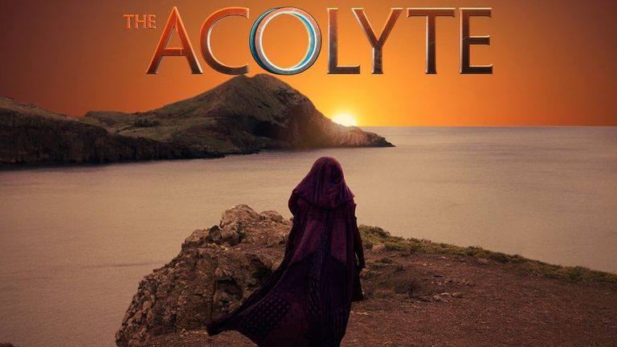

The Acolyte | O que esperar da nova série de Star Wars
The Acolyte, nova série do Disney+, chega ao streaming em junho com a tarefa de mostrar, pela primeira vez em live action, uma aventura que se passa na era da Alta República, que antecede os acontecimentos dos filmes da saga Star Wars. Mostrando uma investigação em torno da morte de alguns Jedi, a série deve trazer um estilo diferente de história que conhecemos com os cavaleiros da Força.